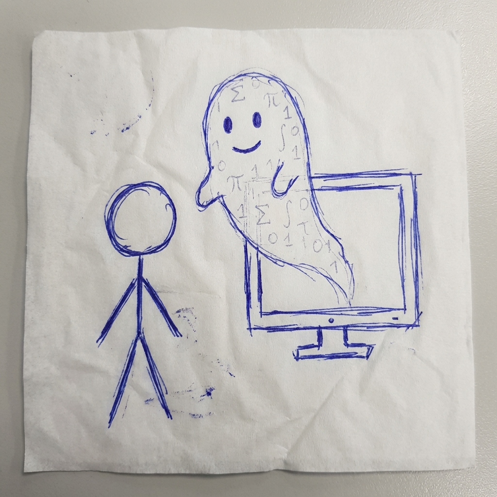
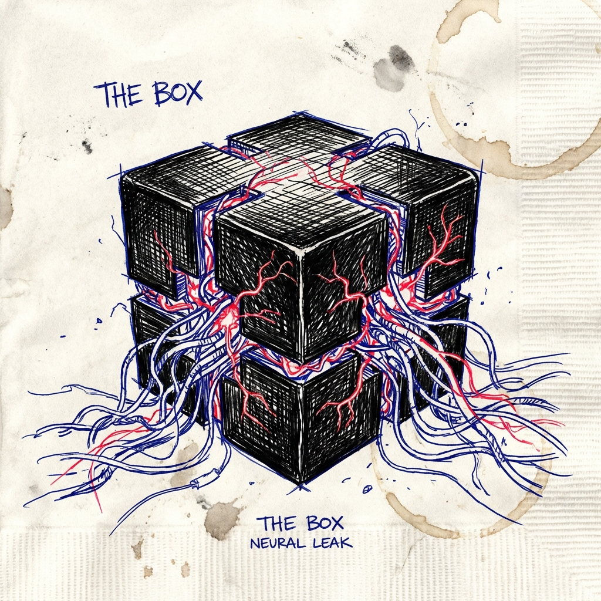

(Tại sao AI không giống như Microsoft Word?)
Một cái máy Autocomplete vĩ đại?
Một bộ máy tìm kiếm (Search Engine)?
Hay một thứ gì đó... biết suy nghĩ?

Một thực thể thực sự đang... Tư Duy?
(Đáng lo ngại thay, ngay cả những người tạo ra nó cũng không thực sự "hiểu" nó 100%)
Là khoa học về việc...
mở hộp sọ của mô hình ra,
và nhìn vào bên trong.
Phần mềm thường
(Code bởi con người)
AI Model
(Được TRỒNG, không phải VIẾT)
// This is NOT how it works:
if (user_says_hi) {
reply("Hello!");
}
Trong AI, không có dòng code nào
quy định cụ thể như vậy!
Ban đầu, nó rất ngốc.
Nó nói nhảm.
Nhưng nó được chỉnh sửa (tweaked)
hàng tỷ lần.
"Đoán từ
tiếp theo"
Để làm tốt việc này, nó buộc phải phát triển
Tư Duy & Logic.
Nó trở thành một mớ hỗn độn phức tạp.
Một Mạng Thần Kinh (Neural Net)
mà không ai hiểu rõ cấu trúc bên trong.

"Nó đang nghĩ gì?"
(Đón xem Phần 2: Cầu Cổng Vàng & Phép Cộng 6+9)